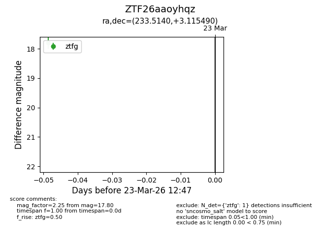
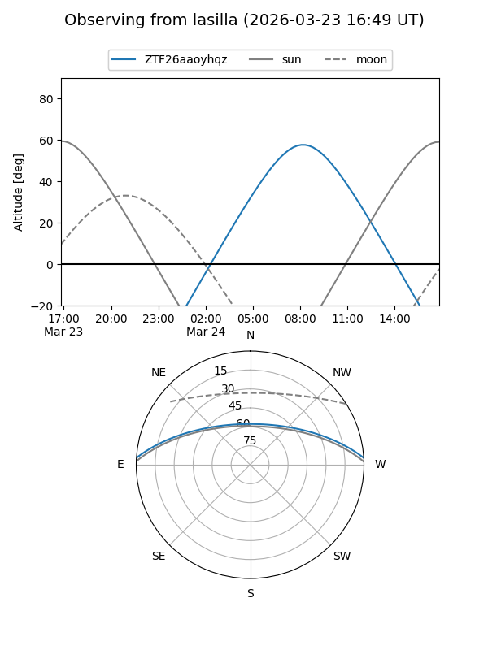
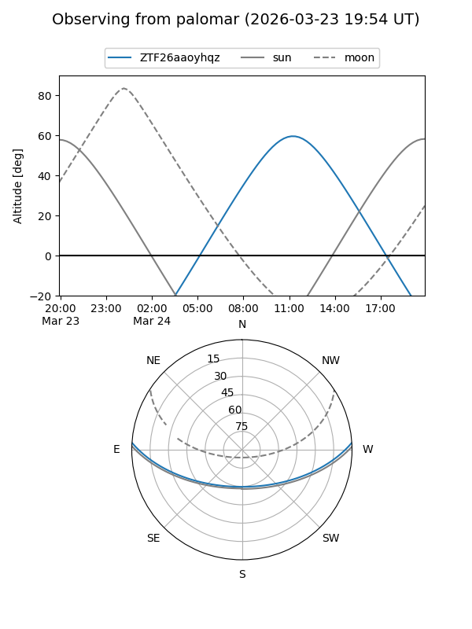

ZTF26aaoyhqz
Target ZTF26aaoyhqz at 2026-03-23 12:49
Aliases and brokers:
FINK: link
Lasair: link
ALeRCE: link
alt names
ZTF26aaoyhqz (ztf,fink_ztf)
Coordinates:
equatorial (ra, dec) = 233.5140,+3.11549
equatorial (HMS+DMS) = 15:34:03.37,+03:06:55.76
galactic (l, b) = (8.3892,+44.34481)
Flags:
Photometry:
last ztfg=17.80
1 ztfg detections
Lightcurve

Visibility


Additional plots